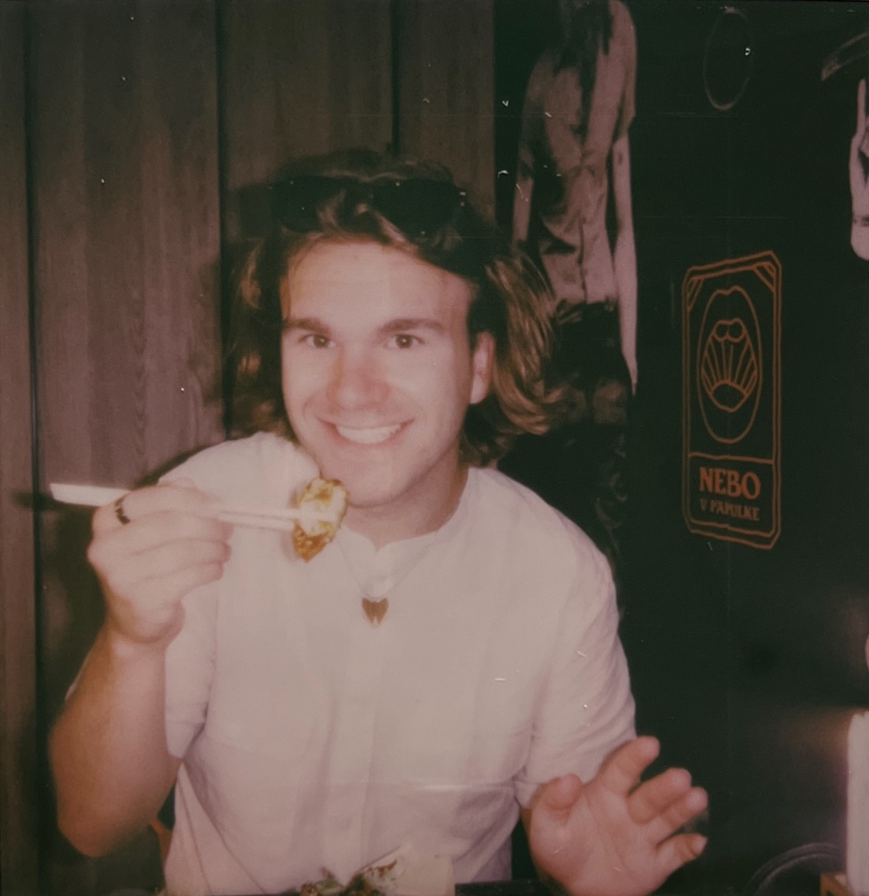

About me
{kind=link}
Honza Mikulica studied multimedia at the Secondary School of Applied Arts ( SŠUM) from 2017 to 2021, specializing in the photography studio under the guidance of PhDr. BcA. Darina Hlinková, Ph.D. During this period, he also encountered subjects related to graphics, animation, drawing, and painting. His focus during his studies primarily involved staged photography, through which he depicted a world of fantasy.
Since 2021, Mikulica has been studying at the Faculty of Fine Arts (FaVU) in the field of Intermedia in the Studio of Body design under the guidance of Prof. Mgr. A. Lenka Klodová, Ph.D., and MgA. Karolina Raimund. In this studio, his focus has primarily revolved around social issues.
In 2023, he completed an internship at the Studio of a Visiting Pedagogue under the guidance of Norwegian educator Alma Leora Culén, exploring research through design and Yo-Yo Machines. Later in the same year, he underwent a second internship, this time under the guidance of the MSHR group (Brenna Murphy and Birch Cooper).
Studies and Internships
Studies
2017 - 2021 - SŠUM photography studio - head teacher: PhDr. BcA. Darina Hlinková, Ph.D.
2021 - NOW - FaVU Studio of Body design - head teacher: prof. Mgr. A. Lenka Klodová Ph.D. and MgA. Karolina Raimund
Internships
2023 summer - FaVU Studio of a Visiting Pedagogue - head teacher: Alma Leora Culén
2023 winter - FaVU Studio of a Visiting Pedagogue - head teacher: MSHR (Brenna Murphy and Birch Cooper)
2024 summer - FaVU Graphic Design Studio 1 - AGDX
Awards
10.místo - Fotograf roku 2018 - Jídlo chutné i krásné Zátiší
4.místo - Fotograf roku 2019 - Vina
5.místo - Fotograf roku 2019 - Úzkost
2.místo - Foto národní 2020 - Bezhlavá a Hydra
Exhibitons
Foto národní 2018 Svitavy - photography
Foto národní 2019 Svitavy - photography
Foto národní 2020 Svitavy - photography
Performance Joints - Studio Alta 19.10.2021 a MFDF Ji.hlava 27. 10. 2021
Performance - Sympozium: Pohled z okraje pastviny Bratislava 12. 5. 2022
Sexshop Nomad Gallery: Being a Pornographer Now Brno Zaazrak 8. 6. - 29. 6. 2023
Circular Time Mutation Collective of Futurable Patterns Brno Káznice 18. 1. - 21. 1. 2024
Slzy, které svět nevidí Praha 20. 11. - 29. 11. 2024
Věk NENÍ jenom číslo! Brno FSS 29. 4. - 15. 5. 2025
TĚLO NA TĚLO Opava House of arts 29. 5. - 31. 8. 2025
Performance - SITUace: Sídliště Blansko 14. 6. 2022
Articles
Cedit 14 - MIKULICA, Honza. Percepce lexikonu intervenujících narativů. Cedit. 2024, roč. 5, č. 14, s. 1. ISSN 2694-7765 MK.
Cedit 14 - MIKULICA, Honza; HAVLA POMYJOVÁ, Eliška; SVOBODOVÁ, Veronika; KOČTÁŘ, Kryštof; MIKULÁŠKOVÁ, Karolína et al. Imaginativní tělo Bílé velryby. Cedit. 2024, roč. 5, č. 14, s. 4. ISSN 2694-7765 MK.